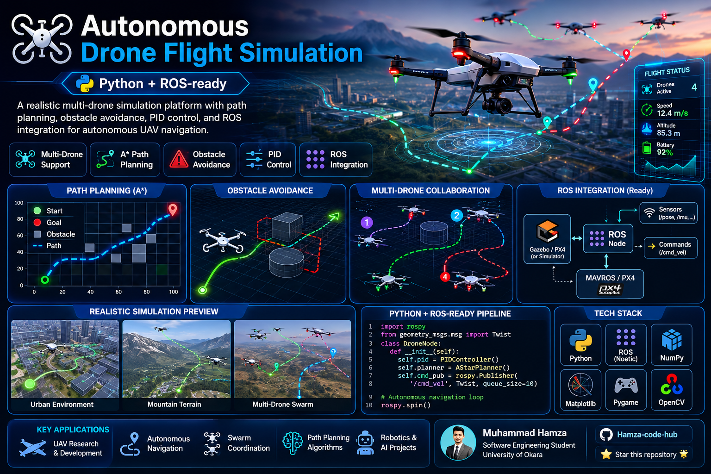

AeroNav Sim
Autonomous drone flight simulation for experimenting with UAV navigation algorithms — path planning, flight control and multi-drone coordination — before moving to real hardware.


Overview
AeroNav Sim is a Python-based autonomous drone simulation platform built to experiment with UAV navigation algorithms in a safe virtual environment. It integrates path planning, flight control and multi-drone coordination, with a ROS-ready architecture designed to extend toward Gazebo, MAVROS and PX4 for eventual hardware deployment.
Purpose — Why This Project Exists
Testing UAV navigation logic directly on physical hardware is expensive, slow and genuinely risky — a bad path-planning bug can mean a crashed drone. AeroNav Sim exists to de-risk that process: navigation, obstacle-avoidance and multi-drone coordination algorithms get validated in simulation first, with a ROS-ready path to real flight controllers once they're proven safe.
Animated Workflow
Key Features
Benefits
Algorithms are proven safe in simulation before touching hardware.
Validates fleet coordination without needing multiple physical drones.
Clear extension route to Gazebo, MAVROS and PX4 flight controllers.
Visual debugging and GIF recording speed up algorithm tuning.